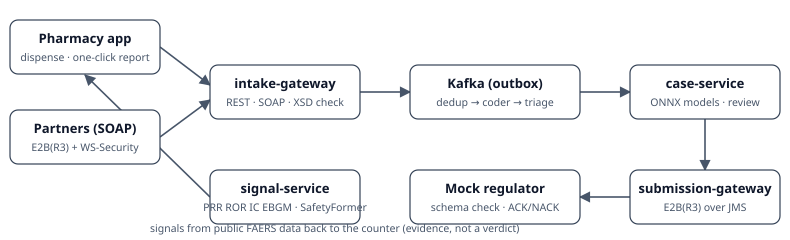

What it does
- Report. A pharmacist dispenses a drug (first-expiry-first-out lots) and reports a side effect in one click; partners send E2B(R3) messages over SOAP with WS-Security.
- Pipeline. Kafka carries each report through de-duplication, MedDRA coding and seriousness triage; the models run inside Java with ONNX Runtime.
- Review. A safety reviewer accepts or corrects every AI suggestion; each decision is stored next to the model's name, version and score.
- Submit. The approved case is exported as ICH E2B(R3) XML, checked against the official schemas, and sent over JMS to a mock regulator that answers ACK or NACK.
- Signals. PRR, ROR, IC, EBGM and a self-supervised Transformer (SafetyFormer) score drug–event pairs in FAERS; the counter shows them as evidence.
Architecture

- Java 21 · Spring Boot 4.1 · Spring-WS · Hibernate · Flyway
- Oracle Database Free · SQL Server 2022 (portability)
- Kafka (transactional outbox, idempotent consumers, dead-letter topics) · ActiveMQ Artemis (JMS)
- Python · PySpark/Delta · PyTorch · LightGBM · ONNX Runtime
- React 19 · TypeScript · Vite · Tailwind · Playwright
- Prometheus · Grafana · OpenTelemetry · k6 · Helm · Strimzi · Jenkins · Terraform (Azure)
Results
Every number below comes from a script in the repository; its result file is committed and linked, and each states the data it was measured on. Items not measured yet say so.
Loading the evidence…
Live demo
The live demo runs on one Oracle Cloud Always Free ARM server. Its address and status are in the README (Live demo); a GitHub Action tests it end to end every day.
Limits
- Not for clinical or regulatory use; a portfolio project.
- Spontaneous reports do not prove that a drug caused a reaction.
- Pharmacy patients are synthetic; replayed reports are public, de-identified FAERS records.
- No MedDRA dictionary content is distributed; reaction terms are the strings FDA publishes in FAERS.
- Built with AI assistance (Claude Code), disclosed in the README and in every commit.